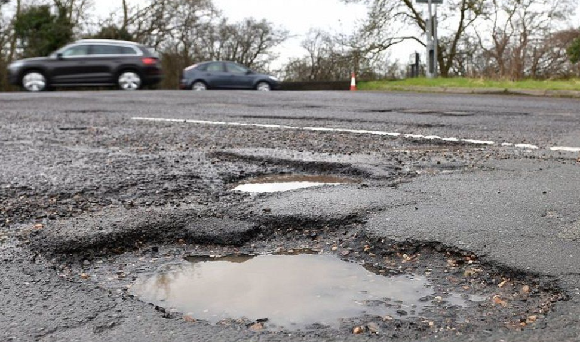
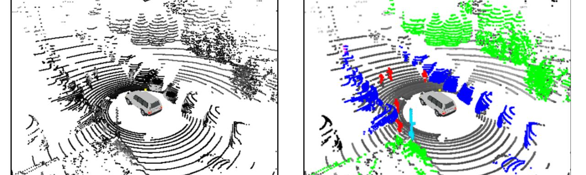

A címekre kattintva további információk jelennek meg.
A témák programozáshoz kapcsolódnak és leginkább robotika, önvezető járművek, ROS, mesterséges intelligencia, C++, python, Linux ismereteket igényelnek.
Utóbbiak minden témaleírásnál külön feltüntetve. Itt felsorolt korábbi témák továbbfejlesztése lehetséges, egyeztessük emailben.
Az önvezető autózás dinamikusan növekvő területének egyik kulcsfontosságú kihívása az optimális
útkeresés algoritmusának kiválasztása és alkalmazása a járművek számára. Az autonóm járművek
hatékonyan kell navigálniuk változatos és gyakran előre nem látható környezeti kihívások között, ezáltal
biztonságos és hatékony útvonalakat tervezve a cél eléréséhez.
Az útkeresési probléma előfeltétele a statikus és dinamikus környezeti modell ismerete, melyben a
részben vagy egészben ismert térkép alapján számítható az útvonal a jármú kinematikai tulajdonságai és
egy előre definiált célfüggvény ismeretében.
A projekt célja egy olyan útkeresési és tervezési rendszer kifejlesztése és implementálása, amely az A*
(A-star), RRT (Rapidly-exploring Random Tree) vagy más, elterjedt algoritmusokra épít. A hallgató
feladata az adott autonóm járműhöz egy hatékony és megbízható útvonaltervező rendszer kidolgozása,
figyelembe véve a különböző környezeti tényezőket és akadályokat. Az elvárt eredmény egy olyan
szoftver megvalósítása és kiértékelése, amely lehetővé teszi az autonóm járművek számára, hogy adaptív
és rugalmas módon válasszák ki az optimális útvonalat, hogy hatékonyan és biztonságosan navigáljanak a
változatos közlekedési környezetben. A munka részét képezi a modern útkeresési módszereket feltáró
irodalomkutatás, a módszerek kvalitatív és kvantitatív összehasonlítása, és kitekintés a gyakorlatban
használt algoritmusokra olyan valós autóipari felhasználásokban, mint pl. az automatikus parkolás vagy
az akadályelkerülés (collision avoidance // safe corridor) a nagysebességű manőverek esetében.
A feladat megoldásához a hallgató a Continental AI Development Center munkatársaitól kap segítséget.
A munka során meg kell ismerni: C++ / Python, GitHub
Egyéb fontos tudnivaló: ROS2 Humble
A klaszterezés egy olyan dimenziócsökkentő, csoportosító eljárás, amellyel több dimenziós adatpontok homogén csoportokba sorolását, klasszifikálnását jelenti. Jelen esetben az adatpontok alatt 2D és 3D LIDAR szenzoradatokat értünk.
A bemeneti adatokból hasonlósági alapon kell megállapítani a klasztereket, illetve megkülönböztetni a többi klaszter elemeitől. A csoportosítás alapját különböző távolság- vagy hasonlóságmértékek képezik.
Az általános célú (k-means, MeanShift, DBSCAN, stb.) algoritmusok jellemző kimenetéhez képest a felismerendő klaszterek speciális alakúak (például hosszú egyenesek vagy görbék).
Ez azt is jelenti, hogy a mi feladatainkra csak részben működnek eredményesen. Cél tehát, hogy a speciális alakú felismerendő objektumokra saját, új algoritmus kerüljön kifejlesztésre.
Inspirációként természetesen célszerű a jelenlegi általános célú klaszterező algoritmusokat használni. A programozás C++ vagy python nyelven készüljön.
A teszteléshez publikus adatokat (jkk-research.github.io/#dataset) és kérésre külön méréseket is tudunk biztosítani. A feladat része több elérhető eljárással (k-means, MeanShift, DBSCAN, stb.) összevetni a saját algoritmust. Az összehasonlítás térjen ki többek között a pontosságra, futási sebességre, algoritmikus komplexitásra. A program ROS node legyen, tehát tudjon ROS topicra feliratkozni és publikálni, real-time, 20 Hz futási sebességgel.
Hasonló általános célú algoritmusok leírása itt található: en.wikipedia.org/wiki/Cluster_analysis
Szükséges elősimeretek: programozási ismeretek
A munka során meg kell ismerni: C++ / Python, GitHub
Egyéb fontos tudnivaló: -
Az egyetemünk tulajdonában lévő Wheeltec / Roboworks Rosbot mini egy Ackermann robot, amely LIDAR-ral, kamerával, IMU-val ellátott. A robot Nvidia Jetson beágyazott vezérlővel rendelkező ROS támogatott.
A gyártó nyílt forráskódú algoritmusokkal ellátta, így ROS rendszerben alkalmas sebesség és kormányszög alapú vezérlésre, valamint a pozícióról is meglehetősen pontos becsléssel rendelkezik. ROS-ben driver szinten hozzáférhetőek a szenzorok. A feladat erre a robotra
történő algoritmus implementáció.
Részfeladatok:
Roboworks Rosbot mini megismerése (SHH kezelés, ROS alapok elsajátítása)
A meglévő (sajnos egyáltalán nem jól dokumentált) package-k dokumentálása még az első félév során
A gazebo szimulátor (https://github.com/sze-info/racecar_gazebo) megismerése, összevetése a valós robottal. Ha
szükséges javaslatok felvetése a javításra.
Egyszerű fal követő megoldás implementálása, amely képes körpályán versenyezni. Összevetése a gyári megvalósítással (simple_follower /
laser_follower) illetve a középiskolás verseny példamegoldásával: robotverseny.github.io/megoldas_zala23
A robotot hosszabb-rövidebb ideig kölcsönadható a dolgozat ideje alatt, ha az egytemen történő munka épp nem
megoldható.
Szükséges elősimeretek: programozási ismeretek
A munka során meg kell ismerni: C++ / Python, GitHub
Egyéb fontos tudnivaló: -
A járművet körülvevő objektumok mozgásának prediktálása, becslése (esztimálása) az önvezető (autonóm) járművek fontos alfeladata. Jelenlegi tudásunk szerint ezt a feladatot kameraképből vagy LIDAR pontfelhőből neurális hálók segítségével lehet a leghatékonyabban megoldani. Erre megoldás lehet például az időbeliséget reprezentáló RNN (recurrent neural network) alkalmazása.
A munka nem előzménynélküli, saját részmegoldások és egyéb források is elérhetőek:
Fontos, hogy real-time (20Hz) és ROS node megoldás fogadható csak el.
Szükséges elősimeretek: Python
A munka során meg kell ismerni: TensorFlow / PyTorch, ROS / ROS2, GitHub
Adott egy Simulink model, amely egy lokális trajektória tervezőt tartalmaz. Az érzékelt sávszél infók alapján kiszámol egy trajektóriát, amely alapján a jármű az úton képes haladni.
A modell már létezik, azonban további funkciókat is hozzá lehet adni. A fő feladat ennek a trajektória tervezőnek a megértése, átemelése C++ kódba, majd validálás az eredeti tervezőhöz képest ROS-es szimulációban.
A végeredmény egy letisztult ROS node, amely egy sávtartó funkció részévé válik.
Szükséges elősimeretek: C++
A munka során meg kell ismerni: ROS / ROS2, GitHub
Egyéb fontos tudnivaló: -
A vezethető útfelület észlelése mind az vezetéstámogatás, mind az önvezető járművek fontos alfeladata. Kameraképből a vezethető útfelület meghatározása mai tudásunk szerint leghatékonyabban neurális hálók segítségével lehet. A rendszer megköveteli az úthatár azonosítását és a környező akadályok, például járművek, gyalogosok, védőkorlátok és épületek felderítését. A fejlesztendő rendszer által észlelt eredmény felhasználható ütközések elkerülésére és az útvonal tervezésére. A feladat része, hogy ROS sensor_msgs/Image típusban érkező képből visualization_msgs/MarkerArray típusú üzenetben jelenítse meg az út szélét, átkonvertálva azt "bird eye view"-ba. A marker az út szélét jelző félpoligonokból álljon, lehetőleg egyszerűsített módon, kevés pontszámból álljon. A fejlesztendő algoritmussal szemben támasztott további követelmény a 20Hz-es feldolgozási idő. Mentett log adatok a fejlesztéshez publikusan elérhetőek (github.com/szenergy/szenergy-public-resources ), de kérésre újakat is tudunk rögzíteni.
Szükséges elősimeretek: Python
A munka során meg kell ismerni: TensorFlow / PyTorch, ROS / ROS2, Linux / Windows 11 WSLg
A munka során meg kell ismerni: TypeScript, JavaScript, Node.js, yarn
Egyéb fontos tudnivaló: -
Elvállalta: Á. Bálint
Kamera mérésekből megállapítani a kátyúkat (neurális háló segítségével) majd ezt transzformálni (pl LIDAR alapon). ROS megoldás az elvárt.

Szükséges elősimeretek: programozási ismeretek
A munka során meg kell ismerni: C++ / Python, ROS / ROS2, GitHub
Egyéb fontos tudnivaló: -
Elvállalta: T. István
LIDAR mérésekből megállapítani a kátyúkat (neurális háló segítségével)

Szükséges elősimeretek: programozási ismeretek
A munka során meg kell ismerni: C++ / Python, ROS / ROS2, GitHub
Egyéb fontos tudnivaló: -
Elvállalta: J. Mátyás
LIDAR mérésekből megállapítani a formgalmi sávokat real-time, 20 Hz. A hallgató feladata, hogy ROS / ROS2 kompatibilitással C++ programot (node-ot) készítsen sávdetektálásra. További lehetőség, hogy az algoritmus deszkamodelljét Python nyelven dolgozza ki. Az algoritmus bemenete sensor_msgs/PointCloud2 típusú LIDAR pontfelhő, amely városi vagy közúti környezetben készült és tartalmaz nyers sávadatokat. A kimenet olyan visualization_msgs/MarkerArray, amely a nyers sávadatokat már feldolgozott formában képes hirdetni, vizualizálni. A munkához felhasználható bármely nyílt forráskódú megoldás, forrásmegjelöléssel. A munka dokumentálása, a konzultációk történjen GitHub alapokon. Kiinduláshoz használható az egyetemi dataset: https://jkk-research.github.io/#dataset, de kérésre rögzítünk újakat.
Szükséges elősimeretek: programozási ismeretek
A munka során meg kell ismerni: C++ / Python, ROS / ROS2, GitHub
Egyéb fontos tudnivaló: -
Elvállalta: V. Máté
Egy meglévő MATLAB kód alapján egy trajektória tervezőhöz egy vezető modell elkészítése. A modell alapjai már elkészültek, ezt lehet továbbfejleszteni úgy, hogy mindez egy neurális hálót tartalmazzon.
A piacon elérhető vezetéstámogató és részben automatizált vezetési rendszerek alapvető eleme a sávtartó funkció.
Azonban ezen funkciók nagyban leegyszerűsített, és így az emberi vezetési stílustól eltérő viselkedést mutatnak. A dolgozat
során cél:
Jól meghatározott forgalmi helyzetekben valódi sofőrök választott trajektóriáinak azonosítása.
Egy vezetői matematikai modell létrehozása neurális háló (vagy más nemlineáris függvényreprezentáció) segítségével.
A mérések és egy rendelkezésre álló trajektória segítségével a modell kalibrálása.
A modell validálása erre szolgáló teszt adathalmazon.
A feladatot egy rendelkezésre álló feldolgozó és kiértékelő környezetben kell megvalósítani, a cél, hogy az elkészült
algoritmus a MATLAB programmal kompatibilis legyen.
A hálót valódi forgalmi környezetben felvett mérések alapján kell tanítani, majd másik (lineáris) vezetői modellel összehasonlítani. Meg kell határozni a háló típusát és paramétereit, implementálni (leginkább MATLAB-ban, akár beépített függvények használatával) majd tesztelni a felvett adatokon. Ehhez rendelkezésre áll egy szegmentáló és kiértékelő környezet, amelyet használni lehet / kell.
Szükséges elősimeretek: Programozási ismeretek, neurális hálók
A munka során meg kell ismerni: MATLAB, TensorFlow / PyTorch, ROS / ROS2, GitHub
Egyéb fontos tudnivaló: -
Elvállalta: Cs. Cintia
Az egyetem tulajdonában lévő robot különböző fejelsztési feladatai.
Szükséges elősimeretek: Minimális Android fejlesztői ismeretek
A munka során meg kell ismerni: C++ / Python, ROS / ROS2, GitHub
Egyéb fontos tudnivaló: A dolgozathoz használható robot az egyetemé, nem lehet hazavinni, de munkaidőban itt végig elérhető
Elvállalta: I. B.
RVIZ/RVIZ2 plugin létrehozása Linux/Windows 11
Szükséges elősimeretek: programozási ismeretek
A munka során meg kell ismerni: C++ / Python, ROS / ROS2, GitHub
Egyéb fontos tudnivaló: -
Elvállalta: F. R.
A feladat során a járműmodell egy szimulált környezetben különböző szenzorokra támaszkodva, a pillanatnyi helyzet és szenzoradatok alapján, feltérképezi a környezetét, majd az üzemmódjának megfelelően viselkedik. A fő funkció az autonóm üzemmód, melyben a jármű számára ismeretlen, teljesen új környezetben tud haladni, úgy, hogy nem tér le az útról és az azon található akadályokkal való találkozást elkerüli. Másodlagos feladat, hogy autonóm üzemmódba a jármű a legrövidebb idő alatt a legtöbb utat tegye meg, mint egy klasszikus versenyen. Emellett, a modern, az autonóm járművek képességeit próbára tevő, Shell Eco-marathon nevű verseny, új, autonóm járművekre kiírt feladatai közül képes legyen néhányat megoldani
Elvállalta: B. Sz
A témaleírás kidolgozás alatt🍺
Szükséges elősimeretek: programozás alapismeretek, mesterséges intelligencia
A munka során meg kell ismerni: TensorFlow / PyTorch
Egyéb fontos tudnivaló: -
Elvállalta: T. Tibor
A feladat magában foglalja coverage path planning (CPP) algoritmusok megvalósítását és elemző összevetését, valamint a vonatkozó szakirodalom áttekintését is. A CPP algoritmusok térképek optimális bejárásának kérdéseivel foglalkoznak. A megvalósítás nyelve lehet python gay C++. Legalább két CPP algoritmus (pl. boustrophedon cellular decomposition coverage, iterative structured orientation coverage) megvalósítása a cél. Az algoritmusok occupancy grid map (foglatsági rács) reprezentációjú térképeken működjenek. A megvalósítás után az elemző összevetés térjen ki a megvalósított algoritmusok teljesítményére, számítási igényére, illetve nyelvekkel kapcsolatos megvalósíthatósági kérdésekre is. Amennyiben a munka során feltár lehetőségeket, tegyen javaslatot az algoritmusok optimalizációjával kapcsolatban is. A forráskódot publikus repository-n megosztani. Példa a lehetséges eredményre, kimenetre (ez MATLAB-ban készült):
A munka során meg kell ismerni: Python, Jupyter notebook, GitHub, Openstreetmap (opcionális webes formátumhoz további webes ismeretek)
Egyéb fontos tudnivaló:
Elvállalta: K. Kíra
LIDAR mérésekből az egyetem campusának 3D mesh létrehozás, openstreetmap-ra feltöltése (ez jelenleg is létezik, de elég pontatlannak tűnik, viszont vannak LIDAR méréseink, amivel ezt meg lehetne oldani) osmbuildings.org
Első lépés itt a 3D point cloud létrehozása lenne. Ebben van egy kis tapasztalatunk, tudok segíteni, de internetről összeszedhető a tudás. Amit mi készítettünk egy zalai épületről az pl így néz ki:
Második lépés a pontfelhőből valamilyen mesh készítése akár "kézzel" akár automatikusan pl így: pointclouds.org
Aztán jó lenne egyszerűsíteni ezt a mesht, ha olyan bonyolutra sikerült, mint a fenti linken, primitívekkel (pl tégletest, henger)
Ezután megismerni az OSM API-t
Pontosítani a jelenlegi ábrázolást és feltölteni
Szükséges elősimeretek: programozási ismeretek, 3D ismeretek (pl Blender)
A munka során meg kell ismerni: SVL simulator, GitHub